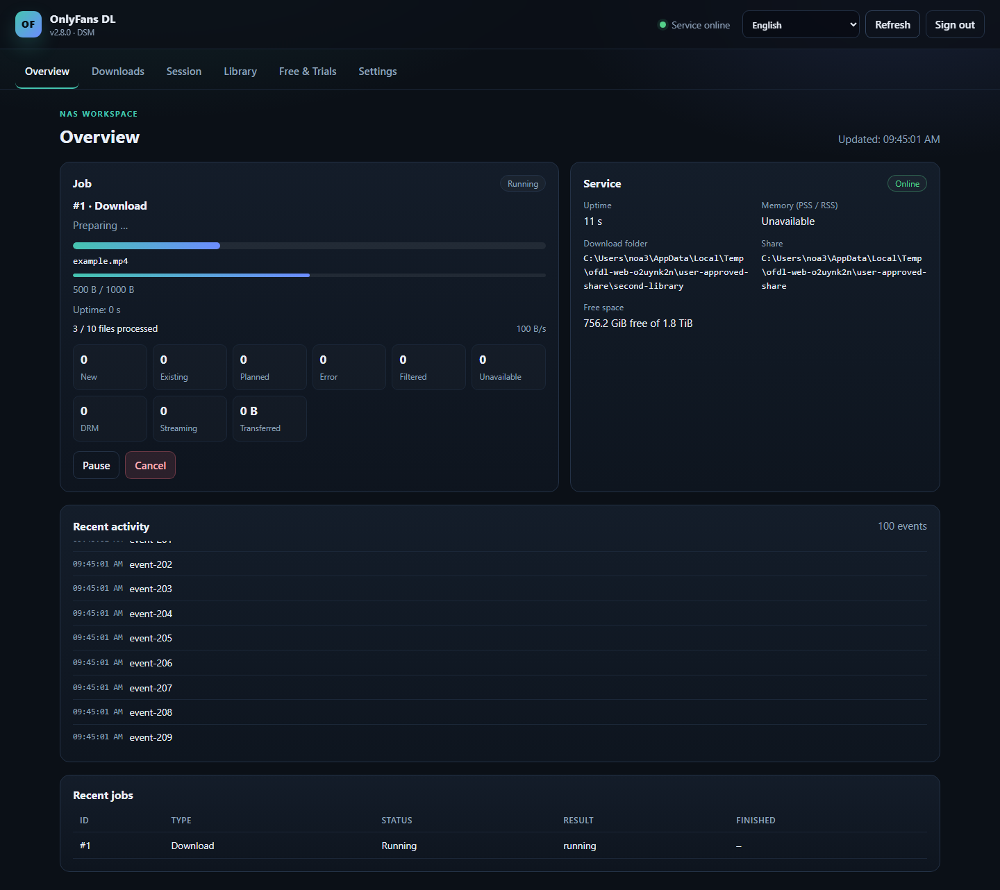

Your library, directly on the NAS.
A native DSM 7.2 package for the OnlyFans downloader. It installs a private Python 3.13 runtime and runs a small web interface on the NAS. Downloads, subscription scans and previews run in a separate short-lived worker process.
What it does
Native package
Installs through Package Center. No manual Python, pip or SSH steps are required for normal use.
Small control service
The permanent service uses only the standard library. Heavy libraries are loaded only by the short-lived worker.
Web interface
Session import and test, folder picker, creator selection, downloads, pause/cancel, schedule and status.
Existing library
Reuses files, folder layouts, .part files and the existing .ofdl.sqlite3 manifest.

Installation
- Add the SynoCommunity source.
Package Center → Settings → Package Sources →https://packages.synocommunity.com/ - Install the SPK.
Package Center → Manual Install. Python 3.13 is installed as a dependency. - Set the web password.
The install wizard asks for a password. Open the package from the DSM menu orhttp://<NAS-IP>:8765/. - Choose a folder and import a session.
In DSM, grantsc-onlyfansdlRead/Write access only to your chosen share (Permissions → System internal user). Save an existing library path in Settings. No shared folders are created automatically.
Security model
The package runs as the unprivileged DSM service account sc-onlyfansdl.
It does not request root or administrator group membership. The web interface has its own password;
it is not DSM single sign-on. The session file is stored mode 0600 and is never written to settings or logs.
For remote access, put DSM's HTTPS reverse proxy in front of port 8765. Do not expose the port directly to the internet.
Storage and compatibility
Library
One explicitly saved path in Settings for downloads, library and schedule. Existing files stay in place. Upgrades require confirming the path; old shared folders are not deleted.
Memory
The control service stays small. The worker exits after each job. The 50 MiB idle PSS target has not yet been verified on the DS723+.
Schedule
A daily time can start the saved download settings. Never more than one job runs at a time.
Language and login
Seven UI languages including Italian, Dutch and Portuguese core texts. Auto mode uses an available DSM locale then browser fallback; manual selection overrides it. Missing translations fall back to English/German. Session persists after reload and package upgrade.
Status and recovery
Reload restores current job and recent events. Scanning and file transfer have separate progress indicators. Temporary API read failures show a cancellable three-minute retry wait.
Free & Trials
Read-only discovery and opt-in daily resubscriptions for explicitly allowed, rechecked permanently free profiles. Trials stay website-only because paid renewals are possible. Price changes between check and response cannot be fully excluded.
Documentation
README
Overview, installation and release notes.
Architecture
Control service, worker, SQLite jobs and permissions.
Test report
Local results and the DSM hardware checklist.
Security
Session handling, exposure and reset procedure.